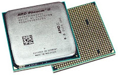
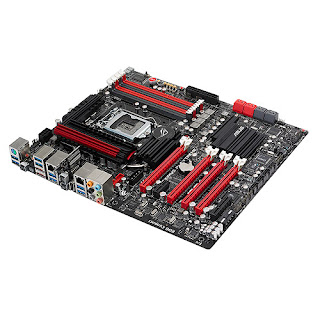
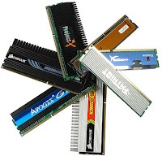

Центральный процессор(CPU) – это ядро компьютера, так сказать основной его мозг, тот компонент, который выполняет основную массу работы компьютера. Называют обычно просто процессором, а иногда из-за его кремневой основы "камнем".
Материнская плата – это одна из основных плат (компонентов) компьютера. Она предназначена, чтобы соединять остальные компоненты компьютера в нечто единое под названием системный блок. Материнская плата, обеспечивает разветвление и питание эл. энергией всех компонентов, также она физически соединяет компоненты, и обеспечивает контроль физического соединения и работы. Например, если провести аналогию с автомобилем, то процессор будет мотором, а материнская плата кузовом… хотя не самое удачное сравнение.
Оперативная память – она же ОЗУ (RAM), она же опертивка. Служит для временного хранения данных, с которыми работает центральный процессор. Наверняка некоторые задаются вопросом «зачем?», ведь есть жесткий диск, есть память в процессоре. Ответ прост, необходимость хранить все больше и больше оперативных данных растет постоянно и память процессора(кэш) для этого очень мала, что касаемо жесткого диска, на нем храниться часть данных, но только часть, скорость работы оперативной памяти значительно быстрее чем скорость работы с жестким диском, потому ОЗУ и используется.
